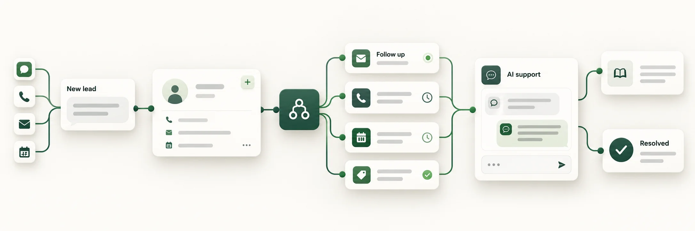

Start with the conversations and repetitive tasks taking up your day. We connect AI to your existing tools, then keep the workflows running and improving.

01
Lead follow-up
Give every new inquiry a clear next step. Connect calls, messages, and your CRM so follow-up doesn’t depend on someone remembering.
Explore service +
AI voice and chat workflows can capture lead details, qualify interest, help schedule appointments, and update your CRM. We define the handoffs so your team knows when to step in.
Help customers get answers without adding another queue to your day. Build support around your business information and real customer needs.
Explore service +
Connect AI assistants to approved knowledge, product information, and status updates. Route exceptions to a person, review conversations, and improve the answers over time.
Stop moving the same information between tools by hand. Connect the work behind your customer conversations, from intake to reporting.
Explore service +
We map repetitive tasks, connect APIs and business apps, and build the custom software your workflow needs. Start with one useful improvement and expand where it makes sense.
Work directly with the person building and managing your automation, from the first conversation through ongoing support.
Yomud brings full-stack engineering and product delivery experience to the small-business workflows that matter most: following up, answering customers, and keeping information connected.